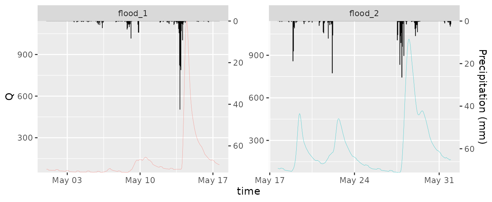

Introduction to ggRunoff
Yuxuan Xie
2025-01-07
ggRunoff.RmdLet’s get start with ggRunoff.
Load R package and data
library(ggplot2)
#> Error in get(paste0(generic, ".", class), envir = get_method_env()) :
#> object 'type_sum.accel' not found
library(ggRunoff)
#>
#> Attaching package: 'ggRunoff'
#> The following object is masked from 'package:base':
#>
#> %||%
data("runoff_data", package = "ggRunoff")
# add a flood type
runoff_data$flood_type = c(rep('flood_1', 400), rep('flood_2', 344))
head(runoff_data)
#> time prcp Q flood_type
#> 1 2010-05-01 00:00:00 0 73.32857 flood_1
#> 2 2010-05-01 01:00:00 0 72.77857 flood_1
#> 3 2010-05-01 02:00:00 0 72.88571 flood_1
#> 4 2010-05-01 03:00:00 0 73.31429 flood_1
#> 5 2010-05-01 04:00:00 0 69.79286 flood_1
#> 6 2010-05-01 05:00:00 0 66.16429 flood_1Visualization
set_coef = 15
ggplot(runoff_data, aes(x=time, Q)) +
geom_rainfallRunoff(
aes(runoff=Q, prcp=prcp, color=flood_type),
coef=set_coef, show.legend = F
) +
scale_y_precipitation(sec.name = 'Precipitation (mm)', coef = set_coef) +
facet_wrap(~flood_type, scales = 'free')